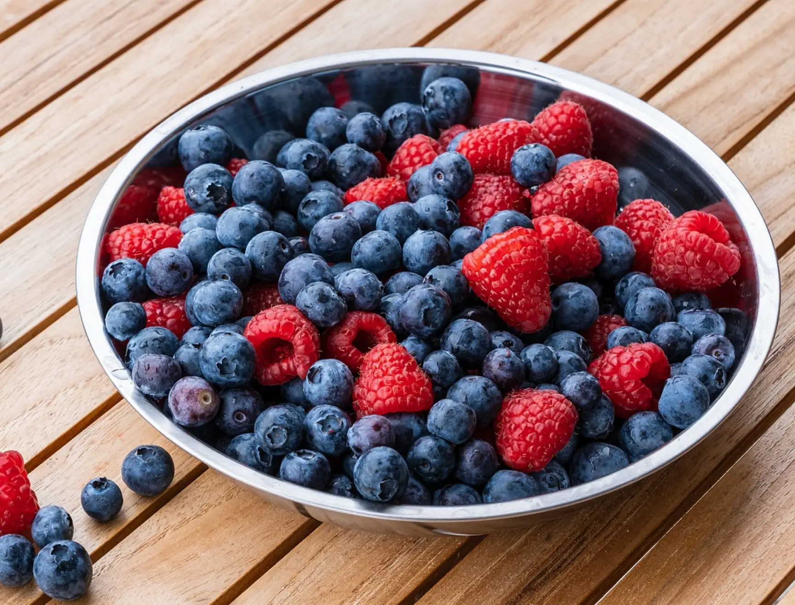
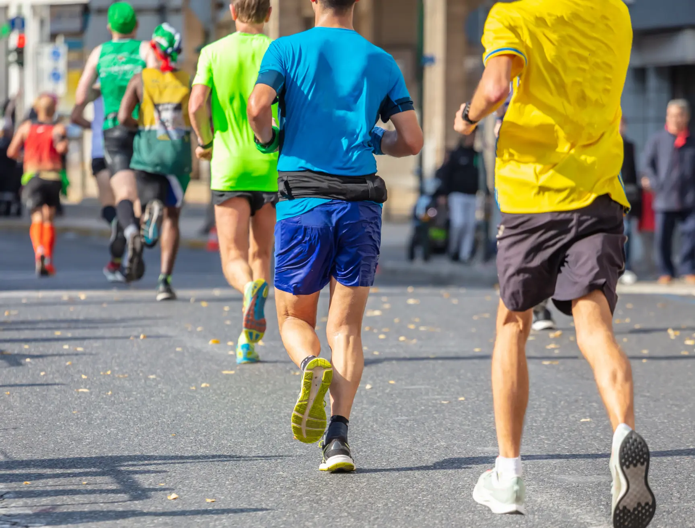

MEIN ERNÄHRUNGSBLOG
ROTER SMOOTHIE - Warum er so gesund ist!
30.Mai 2024
Wussten Sie, dass Beeren als gesündeste Obstsorte überhaupt betrachtet werden? Je dunkler die Beeren, desto reicher an Antioxidantien sind sie, welche den Körper vor freien Radikalen schützen. Sie stecken voller Vitamine und Mineralstoffe und weisen zudem einen relativ geringen Zuckergehalt auf. Das hat wiederum sehr positive Auswirkungen auf den Blutzuckerspiegel. Enthalten sind neben den Vitaminen C, E, Selen und Zink auch die in den Beeren enthaltende Anthozyane.
Ernährung für Laufsportler - die Mischung macht`s aus!
14.Mai 2024
Hätte man großartige Läufer*innen früher nach ihrem Geheimrezept gefragt, hätte die Antwort „Training, Training, Training“ gelautet. Mittlerweile ist bekannt, dass man viel mehr tun kann – Stichwort: „Iss was G’scheits!“ Denn eine gesunde und ausgewogene Ernährung ist das A und O für Ihre Leistung und Regeneration. Grundsätzlich decken Sie damit den Nährstoffbedarf Ihres Körpers ab, auch bei mäßigem Sportpensum. Die ideale Ernährung für Ausdauersportler setzt sich aus rund....
Müsli selber machen - 2 schnelle und gesunde Rezepte!
17.April 2024

Wer etwas Abwechslung zur fertigen Müslimischung sucht, unter Allergien leidet oder auf Zucker verzichten will, kann Müsli auch einfach selber machen. Wir zeigen Ihnen zwei unkomplizierte Rezepte. Ohne eine Schale Müsli starten viele nicht – oder nur äußerst ungern – in den Tag. Und das ist auch sinnvoll, denn Müsli liefert Energie und macht lange satt: In den Getreideflocken stecken Ballaststoffe, Kohlenhydrate und wichtige ungesättigte Fettsäuren. Eine gute Alternative, für mehr Kontrolle über die Zutaten: Müsli selber machen.......
Frühstücksideen für Kinder und Jugendliche
10.März 2024

Kinderfrühstück muss nicht immer gleich die altbekannte Stulle oder die ungesunden Cornflakes bedeuten. Wie wäre es zum Beispiel mal mit Erdbeer Porridge? Oder mit etwas Herzhaftem wie Rührei Muffins? Die lassen sich auch schon perfekt am Vorabend zubereiten, wenn es mal schnell gehen muss. Ich habe für euch hier einige super leckere und einfach zuzubereitende Rezepte zusammengestellt- die jedem Kind eine Freude bereiten. Erdbeer-Porridge: Für 4 Portionen benötigt ihr..........
Nudeln machen nicht dich - unter bestimmten Bedingungen
15.Februar 2024

Kartoffeln, Reis, Nudeln, Backwaren sollte man tunlichst vermeiden, wenn man gesund leben, sein Gewicht halten oder vielleicht sogar noch abnehmen möchte. Laut Studien kann man das so allgemein wohl nicht fassen. Sie konnten nämlich zeigen, dass Nudeln gar nicht unbedingt dick machen müssen und auch weniger gesundheitsschädlich sind als vermutet. Aber eins vorweg: Das heißt jetzt nicht, dass nun ohne jedes schlechte Gewissen ständig Pasta geschlemmt werden kann.
Ausgewogene Ernährung - das sind die Grundlagen
14.Februar 2024

In der Hektik des Alltags kann es eine echte Herausforderung sein, den Überblick über eine gesunde und ausgewogene Ernährung zu behalten. Zwischen schnellen Snacks und Fertiggerichten verlieren wir oft den Fokus darauf, was unserem Körper wirklich guttut. Doch was bedeutet es eigentlich, sich ausgewogen zu ernähren? Wir geben dir hierzu hilfreiche Tipps, Tricks und Wissen mit auf den Weg damit du zukünftig ein Profi auf dem Gebiet der Ernährung bist - unter mehr lesen findest du genaueres zum Thema